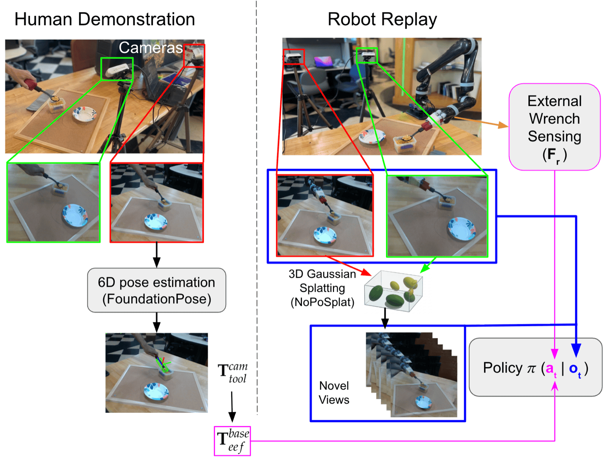
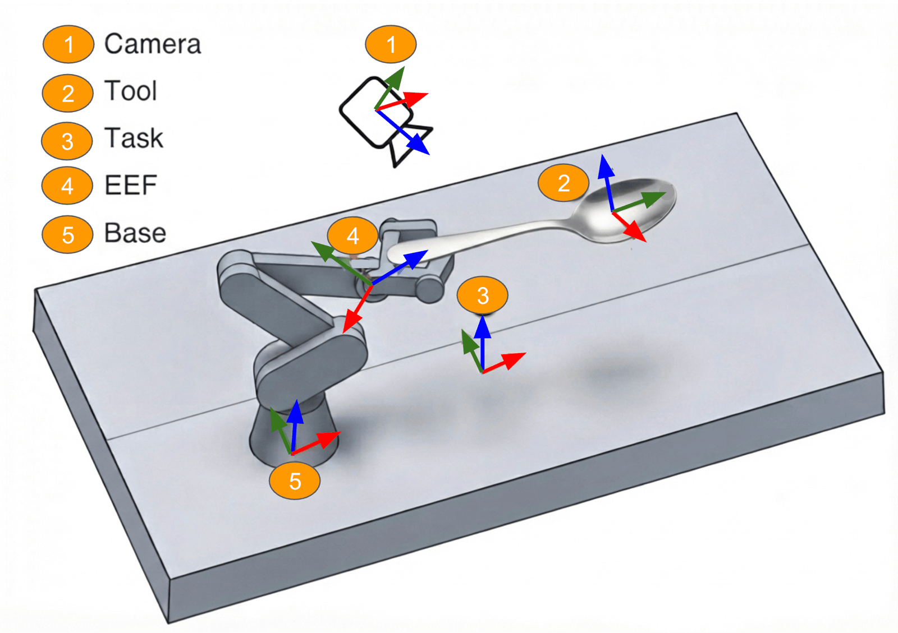
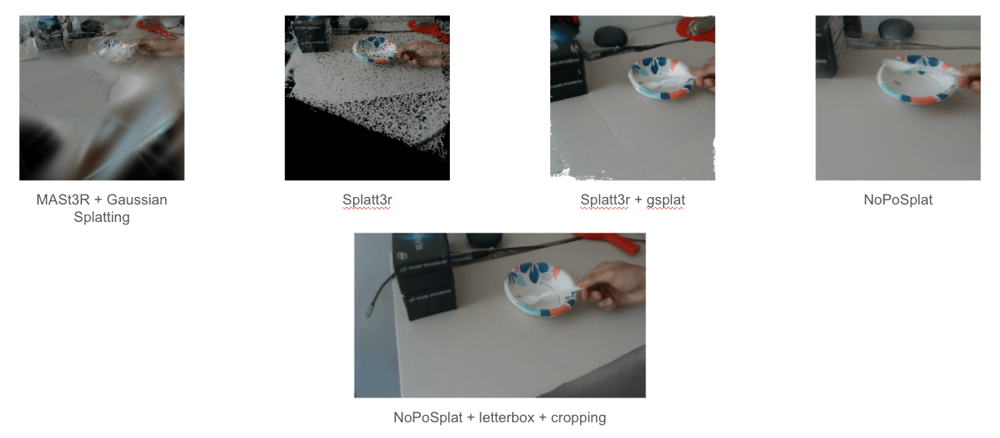
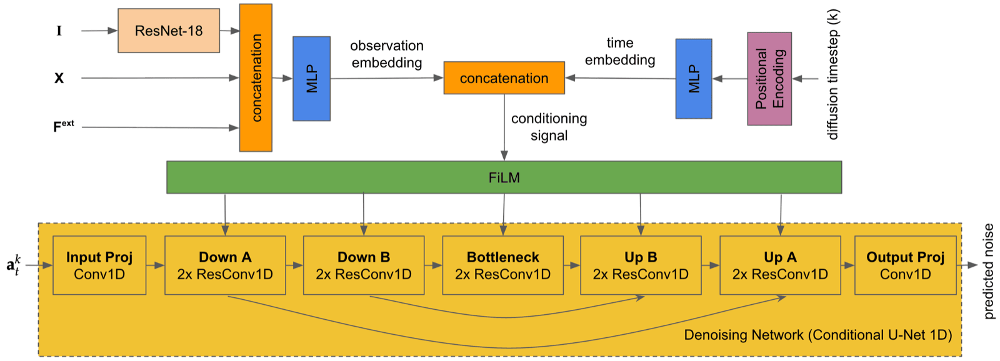

With force conditioning (ours)Without force (pose-only)
Abstract
Contact-rich manipulation requires reasoning about force, not just trajectory, yet standard imitation
learning predicts pose alone. Admittance control can regulate contact force, but requires a hand-specified
reference force, typically constant and poorly suited to tasks where the appropriate force varies over
time. Prior work shows force is best learned as part of the action rather than passively observed, but
still requires a dedicated force/torque or tactile sensor. We introduce a method for recovering a
time-varying reference wrench from a single, uninstrumented human demonstration: a tool is tracked
visually, the trajectory is replayed on the robot under position control, and the external wrench is
recovered from onboard joint torque sensing via the robot’s own dynamics model — requiring no
wrist force/torque sensor and no instrumentation on the demonstrator. A visuomotor policy jointly predicts
reference pose and wrench, supplied at deployment as a time-varying setpoint to a standard admittance
controller. On a pasta scooping-and-transfer task, our method achieves higher success and more closely
reproduces demonstrated contact force than a pose-only baseline, and generalizes across diffusion,
transformer-based, and flow-matching policies, using only 300 seconds of demonstration.
Highlights
Recovers time-varying target contact force from vision-only human demonstrations, via robot replay and the robot’s own onboard joint-torque sensing — no wrist force/torque sensor, no instrumentation on the demonstrator.
A visuomotor policy that jointly predicts a reference pose and a reference wrench at each timestep, trained on this recovered data.
The predicted wrench serves as a time-varying setpoint for standard admittance control at deployment.
Raises success from 82.5% (pose-only) to 97.5% on a pasta scooping-and-transfer task, using just five minutes of human demonstration, and generalizes across diffusion, ACT, and flow-matching policies.
The System & Task
We use a Kinova Jaco2 6-DOF robotic arm with a spherical wrist configuration; each joint is driven by a
modular Kinova actuator (K-75, K-75+, K-58) with an integrated torque sensor alongside its position
encoder, so joint torque is readable directly at every joint — no added instrumentation required. Two
fixed Intel RealSense RGB-D cameras observe the workspace, in which the robot performs a pasta
scooping-and-transfer task: scooping pasta from a pasta box with a 3D-printed rigid spoon end-effector and
transferring it to a bowl.
Fig. 1 — Experimental setup. Two fixed RGB-D cameras observe the workspace, in which the Kinova Jaco2 6-DOF arm scoops pasta from the pasta box with a spoon and transfers it to the bowl.
The task is inherently contact-rich and safety-relevant: near-zero force is appropriate on approach, force
should rise as the spoon engages the pasta, and the right amount varies further with food consistency and
fill level — a single hand-tuned reference force cannot capture this, and a position-only policy has
no mechanism to detect or limit excessive contact force if a trajectory drifts.
Method
Overview
A human demonstrates the task in front of a camera using a handheld tool, whose 6D pose we track. This
motion is then replayed on the robot under position control, so it strictly retraces the
demonstrated trajectory regardless of contact encountered along the way. While replaying, the robot records
its joint torques and, using an estimate of its own dynamics, extracts the external force acting on the
tool — recovering force without ever touching the human demonstration itself. We then generate novel
camera viewpoints of each replay episode with 3D Gaussian Splatting so the resulting policy is robust to
camera placement, and train a diffusion policy on the recovered pose and force trajectories, deploying it
in closed loop with its predicted wrench supplied as a time-varying setpoint to an admittance controller.

Fig. 2 — System overview. Left: a human demonstrates the task with a handheld tool; FoundationPose recovers its 6D pose. Right: the robot replays the tracked trajectory under position control, recovering the external wrench from joint torque while 3D Gaussian Splatting synthesizes novel training viewpoints.
Problem Formulation
The task is formulated as an MDP. At each timestep t, the observation
ot = {Iτ, Xτ, Fextτ} over a short history
window combines a single-view RGB image, the robot’s end-effector pose X ∈ SE(3), and the sensed
six-dimensional external wrench Fext = [Fx, Fy, Fz, Mx,
My, Mz]⊤, recovered from onboard joint torque. The action
at = {Xrτ, Frτ} is a future chunk of a
reference pose and reference wrench — not commands sent directly to the low-level
controller, but the time-varying setpoint supplied to a downstream admittance controller:
Md ë + Dd ė + Kd e = Fext − Fr, e = X − Xr
Admittance control: a virtual mechanical relationship (inertia Md, damping Dd, stiffness Kd) between the pose error e and the deviation between sensed and reference wrench.
Robot Replay & Force Recovery
Human demonstrations are collected with no robot present and no instrumentation on the
demonstrator. A human performs the task with a standard spoon in front of a fixed camera;
FoundationPose tracks the 6D
pose of the spoon at every frame. A fixed ChArUco board provides a common task frame shared between the
camera and the robot, so the tracked tool trajectory can be re-expressed in the robot’s base frame and
converted to an end-effector trajectory via a fixed tool-to-end-effector transform and inverse kinematics.

Fig. 3 — Coordinate frames used to carry the tracked tool motion from the human demonstration into the robot’s base frame: camera, tool, task (ChArUco board), end-effector (EEF), and robot base.
The robot then executes this trajectory under strict position control while recording joint torque
τ(t). Measured torque reflects both the robot’s own dynamics and any external contact:
τ(t) = M(q)q̈ + C(q,q̇)q̇ + G(q) + J(q)⊤ Fext
We estimate the inertial, Coriolis/centrifugal, and gravitational terms from the robot’s own dynamics
model (fit once via ridge-regularized least squares over the replay trajectories, detailed in the paper’s
appendix), subtract them from the measured torque, and attribute the residual to external contact,
converting it to a wrench via the Jacobian pseudoinverse:
The recovered reference wrench — obtained entirely from onboard joint torque, with no wrist force/torque sensor and no instrumentation on the human demonstrator.
Because training images come directly from the robot replaying the task — rather than from the human
demonstration itself — no human-hand or robot-arm segmentation/masking is required at any stage, at
training or deployment: the robot is simply present, performing the task, in both.
Novel View Synthesis
The two fixed cameras provide paired stereo images during robot replay, while the deployed policy sees only
a single camera. To improve robustness to camera placement without collecting additional demonstrations, we
augment the training set with synthetically rendered viewpoints of each replay episode using
NoPoSplat, a feed-forward 3D
Gaussian Splatting model that reconstructs a scene from a pair of unposed images in a single forward pass.
This is valid because the recovered action labels are defined in the robot’s base/task frame, not in
any camera’s frame — so real images and novel-view renders at a given timestep share an
identical action label, at no additional data-collection cost. Rendering happens once, offline; at
deployment the policy receives only the live feed from a single camera.
Fig. 4 — Novel views of a replay episode rendered by NoPoSplat from the two fixed-camera images, used to augment training with viewpoints beyond the two physical cameras.
We compared several feed-forward reconstruction methods before settling on this approach. MASt3R paired
with Gaussian Splatting produced blurry, poorly localized reconstructions from only two input views, and
vanilla Splatt3r left large holes in the point cloud where the two camera views didn’t overlap; adding
gsplat rendering on top of Splatt3r filled in geometry but left visible artifacts near those seams. NoPoSplat
gave the cleanest reconstruction of the four, and cropping its output to the largest hole-free rectangle
before rescaling to native resolution — the version used in our final pipeline — removed the
remaining border artifacts entirely.

Fig. 5 — Novel-view reconstruction quality across methods on the same input views. NoPoSplat with letterbox removal and cropping (bottom) is used in our final pipeline.
Policy Architecture
We adopt a diffusion-based visuomotor policy, extended to accommodate the wrench modality in both the
observation and action space. At each observation step, the camera image passes through a shared,
ImageNet-pretrained ResNet-18 encoder; the resulting visual feature is concatenated with proprioceptive pose
and sensed wrench and passed through an MLP to form a per-step observation embedding. The current diffusion
timestep is separately encoded and combined with the observation embedding to form a conditioning signal,
broadcast to every stage of a Conditional U-Net 1D denoising network via FiLM. The network predicts noise
at each of K denoising steps and is applied iteratively, ultimately yielding the denoised reference
pose and wrench chunk.

Fig. 6 — Policy architecture. A ResNet-18 image encoder is fused with proprioceptive pose and sensed wrench into an observation embedding, which FiLM-conditions a Conditional U-Net 1D that denoises the reference pose/wrench action chunk.
Training & Deployment
The policy is trained with the standard denoising-diffusion objective for visuomotor policies: a
ground-truth action chunk is corrupted with Gaussian noise at a sampled diffusion step, and the network is
optimized to predict that noise given the noisy action, the diffusion step, and the current observation. We
use an observation horizon To = 2 and an action horizon Ta = 16.
At deployment, the policy runs closed loop: at each control step it denoises a reference pose/wrench chunk
from Gaussian noise conditioned on the live observation. The robot also reads its current joint torques and
recovers the live external wrench with the same dynamics-based subtraction used during replay.
The predicted reference pose and wrench, together with this live sensed wrench, are supplied to the
admittance controller, whose corrected pose is what is actually sent to the robot’s low-level
position controller — so the predicted wrench acts as a continuously updated, learned setpoint rather
than a fixed hand-tuned constant.
Results
We evaluate success rate over 40 trials per condition; a trial succeeds if the robot scoops pasta from the
box and transfers it into the bowl without spilling. All conditions train on 30 demonstration episodes
(≈10 s each, ≈300 s / 5 minutes total demonstration data).
Ablation Study
Task success rate across data-collection method, use of force, and policy architecture, all under otherwise identical conditions.
Data Collection
Pose
Wrench
Diffusion
ACT
Flow Matching
Success Rate
Joystick teleoperation
✓
✓
✓
×
×
0%
Human demo + replay
✓
×
✓
×
×
82.5%
Human demo + replay
✓
✓
×
×
✓
92.5%
Human demo + replay
✓
✓
×
✓
×
92.5%
Human demo + replay (ours)
✓
✓
✓
×
×
97.5%
Three patterns emerge. Replay matters: swapping human demonstration + replay for direct joystick
teleoperation (recording pose and force live, no replay stage) collapses success to zero — the
benefit comes from naturalistic human demonstration combined with replay-based recovery, not from access to
live force alone. Force matters: pose-only deployment (no wrench prediction) drops success to
82.5%, confirming force contributes beyond pose alone. The formulation generalizes: the same
recovered pose-and-wrench data trains ACT and flow-matching policies to comparable success (92.5% each),
with diffusion slightly ahead at 97.5%.
Comparison with Tool-as-Interface
Method
Success rate
Tool-as-Interface (pose-only, masked)
80%
Ours
97.5%
Reimplementing the Tool-as-Interface baseline — trained directly on human demonstration images with
segmentation-based masking of the human hand (training) and robot arm (deployment) — our method
outperforms it by a wide margin. Beyond the benefit of force, we attribute part of this gap to the masking
strategy itself: segmentation-based masking is not reliably accurate across all environments, and
inaccurate masks at deployment can degrade policy performance. Because our training images come directly
from robot replay rather than the human demonstration, our method needs no masking of any kind, at either
training or deployment.
Limitations
The accuracy of the recovered force is fundamentally bounded by the accuracy of the underlying tool pose
tracking: since the entire force-recovery pipeline is driven by replaying a tracked trajectory and
attributing the resulting torque residual to external contact, any tracking error propagates directly into
the recovered wrench. This makes the approach well suited to tasks where approximate, task-appropriate
contact force is sufficient to improve behavior — as in the scooping task studied here — but
less suited to applications demanding high-precision force tracking, such as delicate assembly, where
today’s vision-based pose-tracking accuracy would translate into unacceptably large force errors.
Improving the precision of this pipeline for such applications is left to future work.
Conclusion
We presented a method for incorporating contact force into imitation learning without instrumenting the
human demonstrator with any dedicated force/torque sensor. By tracking a tool during an uninstrumented
human demonstration and replaying the resulting trajectory on the robot under position control, we recover
a reference wrench directly from onboard joint torque sensing, using the robot’s own dynamics model to
isolate external contact force. This recovered wrench, together with the demonstrated pose, supervises a
visuomotor policy that jointly predicts a reference pose and wrench at deployment, supplied as a
time-varying setpoint to an admittance controller. On a pasta scooping-and-transfer task, this approach
achieves a higher success rate than pose-only and baseline alternatives, and remains effective across
diffusion, transformer-based (ACT), and flow-matching policy architectures alike — all from just five
minutes of human demonstration in total.
Citation
The paper is currently under review at ICRA 2027. If you’d like to reference it in the meantime:
@misc{chowdhury2026forceconditioned,
title = {Force-Conditioned Imitation Learning from Vision-Only Human
Demonstrations via Robot Replay},
author = {Chowdhury, Sakib and Huang, Raymond and Chen, Vanessa and Guo, Yi},
note = {Submitted to ICRA 2027},
year = {2026}
}